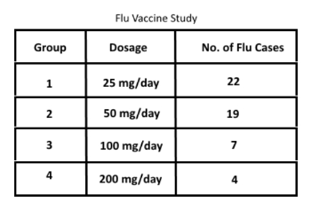
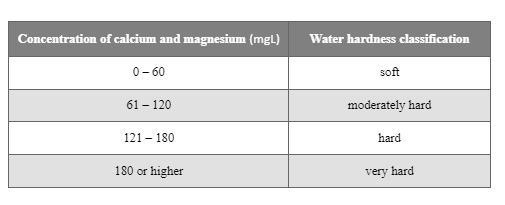

Question 1
A laboratory produces and tests a new flu vaccine designed to prevent the influenza virus. The lab tests four dosages of the vaccine on 400 individuals, male and female, between the ages of 18 and 65 over a 3-month trial during flu season. Each group has 100 randomly assigned participants. The table shows the dosages of the flu vaccine given to each individual in the group, as well as the number of individuals that reported having influenza during the 3-month trial.
The laboratory has published findings in which they claim that the new flu vaccine can prevent the influenza virus. However, a competing lab has criticized the findings, claiming that there is an error in the way the groups were setup.
Question 2
Hard Water
Hard water has not been shown to be a health risk, but it does impact cleaning processes. Hard water leaves spots on dishes, film on bathtubs and showers, and residue on skin and clothing. Additionally, continuous flow of hard water through pipes can cause mineral buildup and clogging.
The table shows water hardness classifications based on the amount of calcium and magnesium in the water.
The local water authority collects samples of the local drinking water every year.
Question 3
A scientist is studying the effects high levels of processed grains have on the mind by feeding them to rats. The scientist has an idea in his head as to what the results will be, but he would like to confirm this. His idea is that rats fed with highly processed grains will not think as clearly as those fed a healthier diet. To perform his experiment, he feeds a specific amount of highly processed grains to one sample of rats for a set amount of time, while the others are fed a diet of plant-based foods. Each set of rats is then sent through a maze individually and timed to determine the speed at which they are able to solve the maze.
Question 4
A scientist is trying to determine the effects of certain creams on skin rashes. He has a sample of four different individuals. Three individuals each take one of three different creams (Creams A, B, and C) and one does nothing. After three days, Cream A has reduced the rash by 50%, Cream B has reduced the rash by 70%, Cream C has reduced the rash by 30%, and the individual who did nothing had the rash reduced by 15%.
Question 5
The orchard sprayed with the chemical yields an average of 60 apples per tree while the other orchard without being sprayed with the chemical yields an average of 40 apples per tree. Based on the data, the scientist would conclude that the use of chemical increase the yield.
1. What changes to the test setup would eliminate the source of the error?
2. What sampling technique would provide the water authority with the most accurate data to get reliable results?
3. The test results show that the rats that were fed with highly processed grains solved the maze at a slightly slower pace than those fed with a plant-based diet. Based on these results, is the experiment finished and reliable?
4. To get reliable results, what should be improved in this experiment?
5. To get valid results, both orchards must: